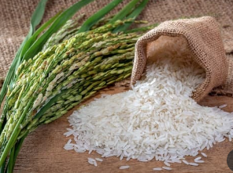

Root and tubers are essential staple foods in many cuisines, including Chinese. These underground plant parts, like potatoes, sweet potatoes, yams, and taro, are rich in carbohydrates, vitamins, and minerals. They can be boiled, steamed, roasted, or used in soups and stews. In Chinese cooking, root vegetables are often used in dishes like braised pork with taro or sweet potato porridge. They provide a hearty and nutritious base, contributing both flavor and texture to a variety of dishes.
Grain-based staples are foundational foods made primarily from grains, which provide essential nutrients and energy. In Chinese cuisine, cereals play an important role in staple foods. The types and proportions of common cereals in different regions and cuisines vary.
| Sort | Name | Video | Proportion | Description |
| 1 | Rice |

|
60% |
Chinese rice is cooked by rinsing it to remove excess starch, then adding it to a rice cooker or pot with a 1:1.5 water-to-rice ratio. It's cooked until tender and fluffy, often letting it sit briefly before serving. Rice can be used to make various dishes, including fried rice, sushi, rice pudding, and rice-based soups. |
| 2 | Noodle |

|
20% |
Noodles are prepared by mixing flour with water and sometimes eggs, then kneading the dough until smooth. The dough is rolled out and cut into desired shapes. Noodles are typically boiled in water until tender. Chinese noodles come in many varieties: egg noodles are rich and chewy, rice noodles are delicate and versatile, and hand-pulled noodles are known for their unique texture. They can be served in soups, stir-fries, or cold salads, and are often flavored with soy sauce, garlic, ginger, and vegetables or meat for added taste. |
| 3 | Dumplings and Steamed Buns |

|
10% |
Chinese dumplings and steamed buns are made from dough of flour and water. For dumplings, the dough is rolled into circles, filled with a mixture of ground meat and vegetables, then sealed and either steamed, boiled, or pan-fried. Steamed buns (baozi) use a leavened dough, often with yeast, and are filled with various ingredients such as pork, chicken, or sweet red bean paste. The buns are steamed until light and fluffy. Both dishes are popular for their rich flavors and tender textures, enjoyed with dipping sauces like soy sauce or vinegar. |